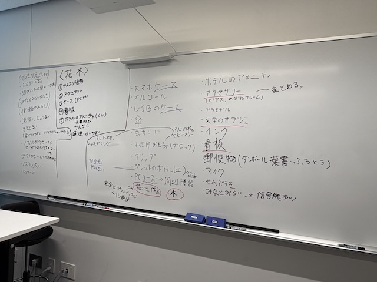
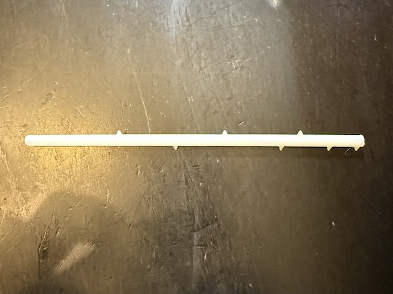
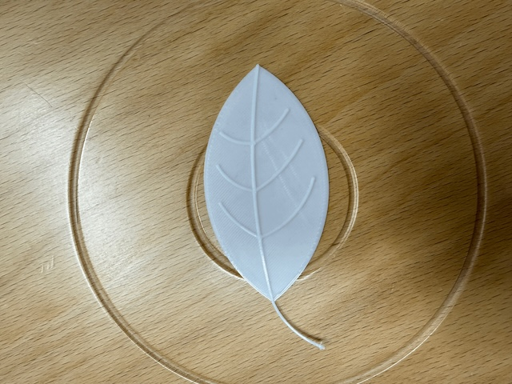
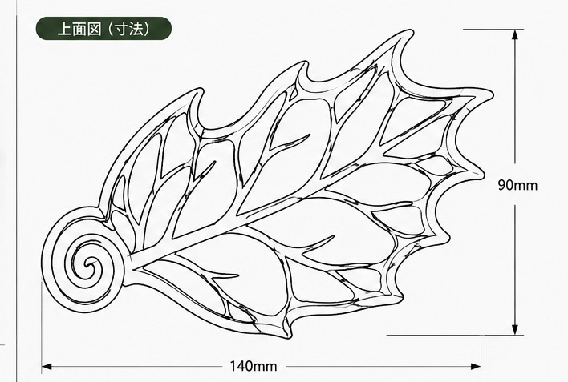

Project Note 3
3Dプリンターを活用
廃棄されるクリアファイルを活用する方法として、大きく2つの方法が挙げられた。 一つはペレットへと変化させ、3Dプリンターのフィラメントとして活用する方法、 もう一つはクリアファイルを切ったり貼ったりしてそのまま活用するという方法も挙げられた。 自分は、3Dプリンターを活用して進めることにした。
テーマを決める
3Dプリンターを活用していく組で、大きなテーマを決めた。その中で決まったテーマは 植物、自然、アメニティ、アクセサリなどが挙げられた。 全体の統一感を出すために決められた大きなテーマが森や植物であった。以下の画像はアイディア案たちである。

制作
早速制作に取り掛かった。 まず、クリアファイルペレットから作られたフィラメントのポテンシャルを把握するために、とりあえず3Dプリントをすることにした。 そのための仮のデータを制作した。花の形をしたかんざしを作ってみることにした。葉っぱ部分をFusionで再現しようと思ったが、 反らせるのが難しかったため、次回に平面で印刷→その後ヒートガンなどであっためて反らせることにした。
葉っぱをデザインし、仮として普通のフィラメントで印刷してみた。また、かんざしのようなものを作りたいので、とりあえず棒の部分のみ作ってみた。 イメージはバラの茎の部分のトゲトゲで、ここが髪の毛に引っ掛かるようにデザインした。 印刷はどちらも成功した。しかし、かんざしのような長く細いものを再生フィラメントで出すと反ってしまい綺麗にならないことが予想される。 葉っぱは再生フィラメント特有の反りを逆に活用し、自然な感じにできると考えた。


今回の制作で現実にある普通の植物を再現しても面白くないと考えた。 そこで私は、現実に存在しないような3Dモデリングならではのデザインをした植物を作りたいと感じた。 ただし、他の人の制作に馴染めるように大まかのコンセプトはグループの計画に則っていく。 かんざしを作ろうと考えていたが、なかなか現実的ではないことに気がついた。 そこでかんざしにとらわれず、一度デザインから入っていき実用性を後からつけることにした。 次にデザインしたのは、ファンタジーな葉っぱである。とりあえずファンシーな葉っぱの形をした小物入れを作ってみることにした。
ここで少しAIを使ってみることにした。以下のようなデザインの葉っぱをFusionでトレースできるような形で出してもらった。

かなり細かくて難しかったが、フィット点スプラインでなぞっていった。そして印刷してできたものが以下の二つである。 左側は、縦横比を間違えてしまい縦長になってしまった。右側は成功した。もっと大きく出せばトレーになる。

まだ現実に存在しそうなデザインであるため、葉脈だけを残してみようと計画している。